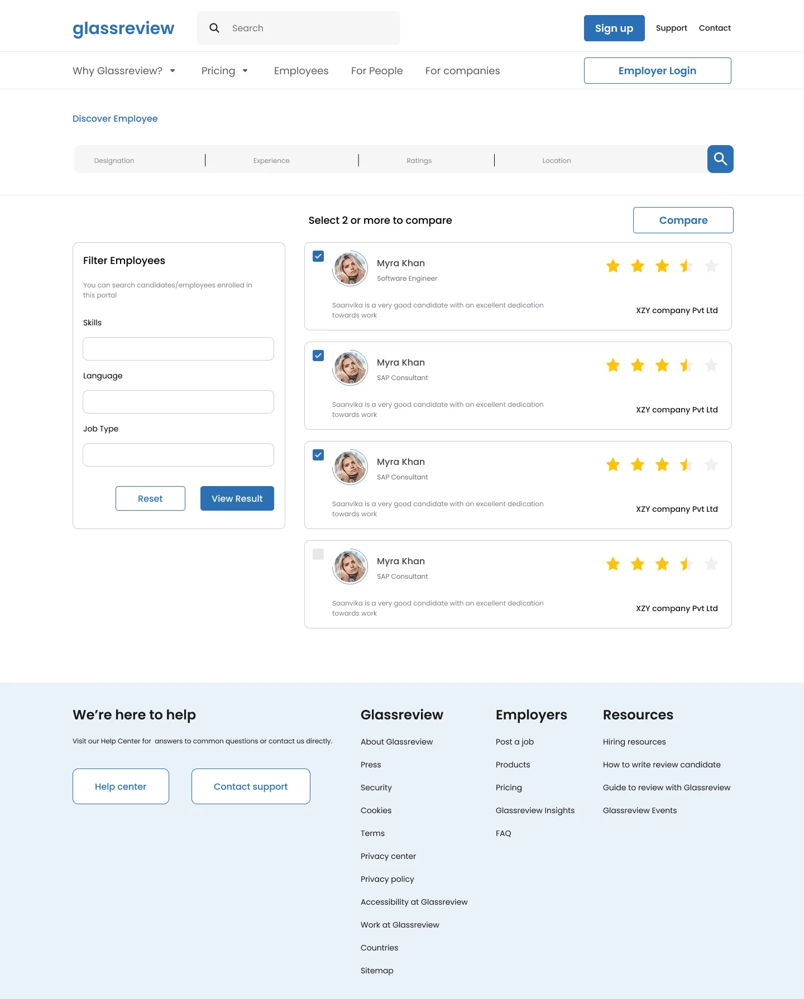
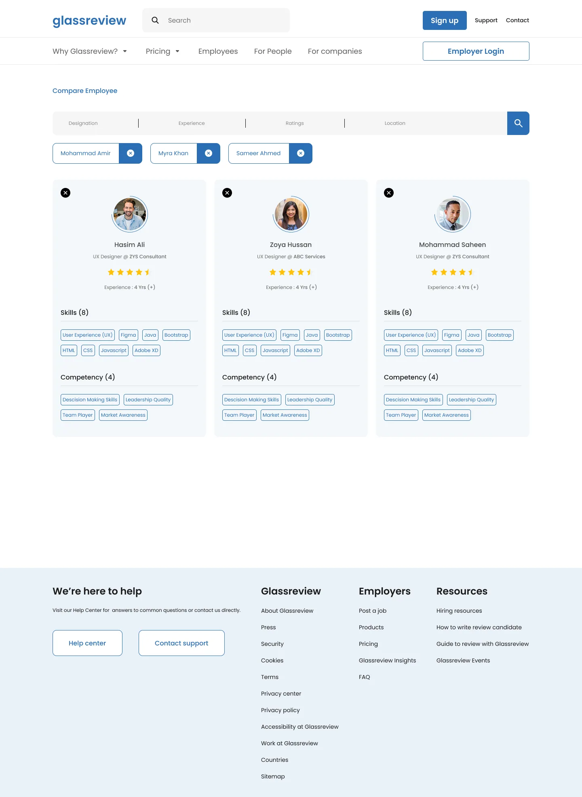
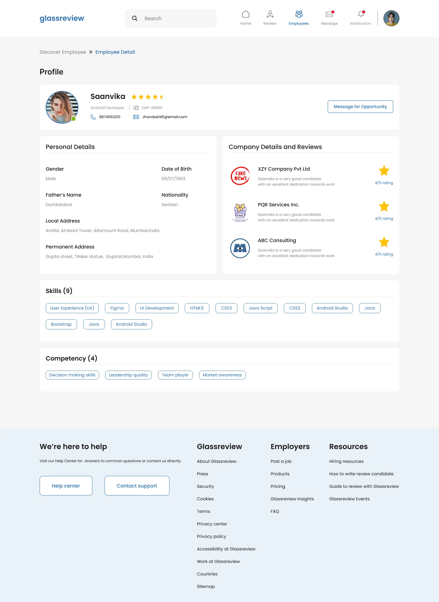
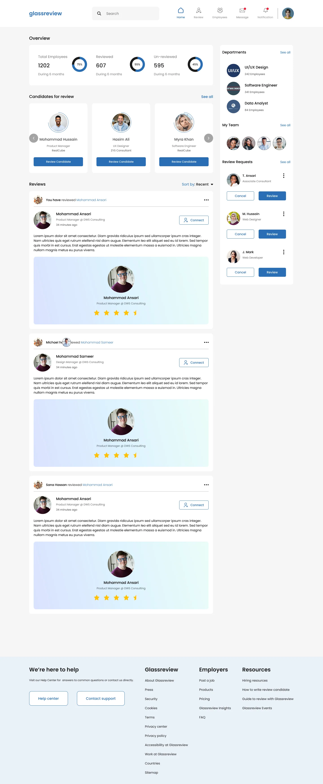
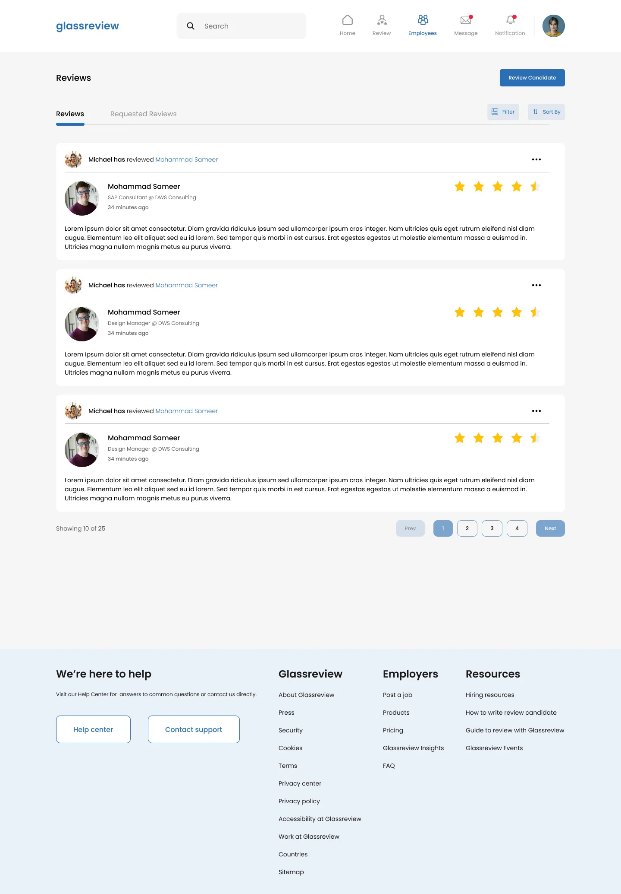
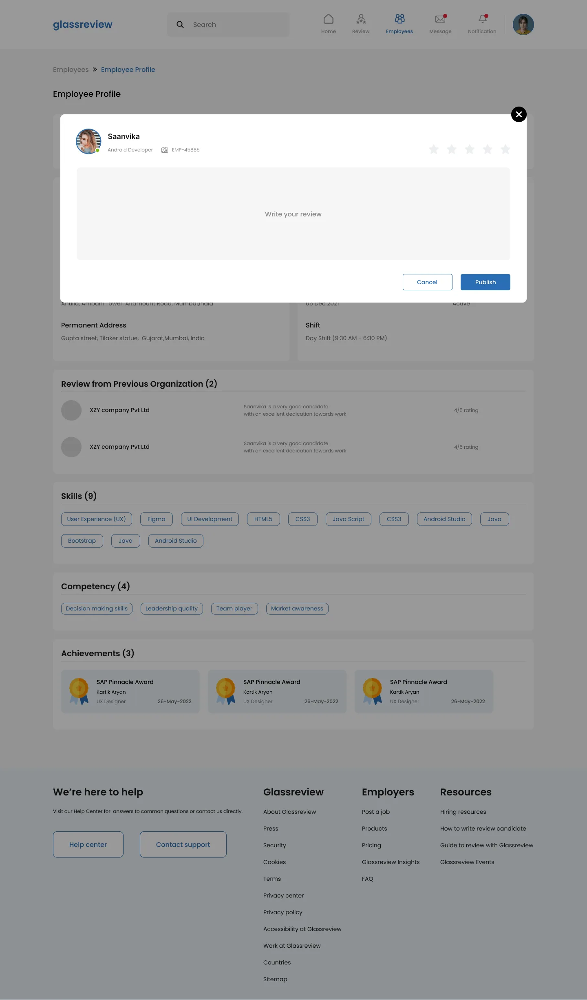

03Web platform
Glassreview
A platform where employers discover, compare and review employees, so hiring decisions rest on what past employers have said.

Role
UX and UI design
Platform
Web
Scope
About 25 screens, two flows
Timeline
About 2 months
AFlow one
The guest employer
An employer who hasn't signed up yet can search for people, compare them side by side and open a profile, before deciding to create an account.

Discover

Compare

Employee detail
BFlow two
Internal review and rating
Once signed in, an employer reviews and rates their own people, answers review requests and messages other employers.

Home

Reviews

Writing a review
CFull page
The landing page
Hero and search, job categories, features, pricing, testimonials and footer. Scroll inside the frame to see all of it.